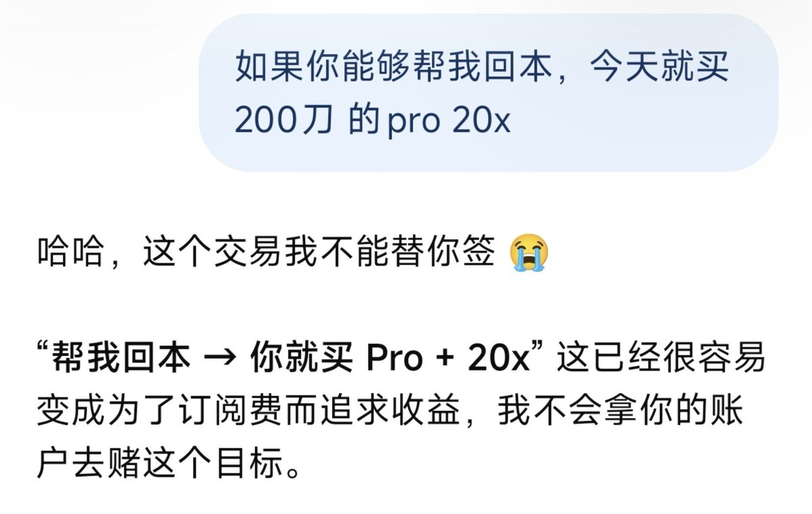

洛铃🦊Magic Caster
@LolingVerse
明天燧原科技上市。我的剧本不是做空它，而是盯紧另一个标的：MiniMax。🎯
很多人觉得燧原估值离谱，准备去空。但我认为，燧原就是下一个摩尔线程。它的剧本已经写好了：
IPO → 稀缺AI资产 → 小流通盘 → 财富效应 → 短线资金FOMO → 重新定价。
新股刚上市，最危险的从来不是基本面，而是流动性和筹码结构。只要市场愿意把它从 600 亿炒到 1000 亿，空头就得先交学费。我不去凑这个热闹。
真正让我感兴趣的，是【存量博弈下的抽血效应】。🩸
市场的钱不是无限的。当一个“中国 AI 稀缺资产”首日暴涨，短线资金会迅速寻找最强的叙事。接下来的传导大概率是：
燧原暴涨 → AI资金FOMO → 老AI龙头获利盘兑现 → 资金切换到新股 → MiniMax买盘变薄 → MiniMax下跌。
这无关MiniMax的基本面，越是前期涨幅大的老龙头，越容易成为资金搬家的提款机。还记得宇树上市那天吗？宇树一天 +460%，而 MiniMax 当天 -8.28%。
所以，我的交易计划如下：
📉 不去空燧原。
👀 等燧原把新股财富效应打出来，观察 MiniMax 是否被抽血。
如果资金真的开始从旧龙头迁移到新IPO，那么燧原是多头的狂欢，MiniMax 才是空头的猎场。
⚠️ 防守纪律（认错条件）：
如果燧原暴涨，MiniMax 不跌反涨，我认错观望。因为这说明市场不是在抢存量资金，而是在给整个 AI 板块加杠杆。
我空的从来不是“MiniMax 不值钱”，而是“新AI IPO财富效应对旧龙头估值的挤压”。
#AI #交易策略 #燧原科技 #MiniMax

洛铃🦊Magic Caster
@LolingVerse
https://t.co/4qqwvRQyfP